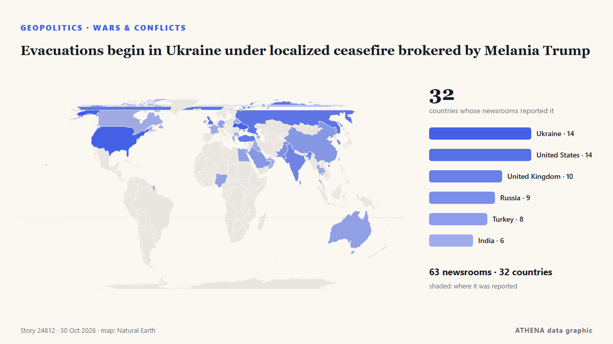

Evacuations begin in Ukraine under localized ceasefire brokered by Melania Trump

Residents of the Russian-occupied Ukrainian town have reported a worsening food crisis since 2022. de Express Tribune
Relayé de façon indépendante par 63 médias dans 32 pays depuis le 23 oct. ; premier à l'annoncer : Express Tribune ; la couverture faiblit. ATHENA juge le risque modéré (3.4/10), surtout en raison de la gravité des dommages décrits et de sa portée géographique et sectorielle. La confiance est de 92 % (élevée) : 63 médias indépendants le confirment, avec une fiabilité moyenne des sources de 77 %. Médias par pays : Ukraine (6), Turquie (4), États-Unis (4). Couverture : du 23 oct. au 23 oct., 7 heures.
Pourquoi c'est important: L'invasion à grande échelle de l'Ukraine par la Russie a commencé en février 2022. Ce suivi couvre les combats, les frappes sur les infrastructures et la diplomatie autour de la guerre, selon la presse du monde entier.
Ce qui a changé : 2 nouveaux articles de 2 rédactions dans les 24 heures jusqu'au 30 oct..
Premier titre : Officials confirm ceasefire for Russian-held Oleshky
Les titres sont affichés en anglais, tels que publiés.
En un coup d'œil
Sélectionné, noté et rédigé par la méthodologie publiée d'ATHENA. Aucun rédacteur n'intervient sur un événement en particulier. Comment il est produit ›
| 23 Oct 09:12 UTC | 61 |
|---|---|
| 23 Oct 21:12 UTC | 8 |
| 24 Oct 09:12 UTC | 4 |
| 24 Oct 21:12 UTC | 3 |
| 25 Oct 09:12 UTC | 1 |
| 25 Oct 21:12 UTC | 0 |
| 26 Oct 09:12 UTC | 2 |
| 26 Oct 21:12 UTC | 11 |
| 27 Oct 09:12 UTC | 15 |
| 27 Oct 21:12 UTC | 1 |
| 28 Oct 09:12 UTC | 5 |
| 28 Oct 21:12 UTC | 0 |
| 29 Oct 09:12 UTC | 2 |
| 29 Oct 21:12 UTC | 0 |
| 30 Oct 09:12 UTC | 2 |
| 23 Oct 13:31 UTC | 0.0 |
|---|---|
| 23 Oct 13:41 UTC | 1.1 |
| 23 Oct 13:43 UTC | 1.7 |
| 29 Oct 12:51 UTC | 3.7 |
| 30 Oct 16:55 UTC | 3.4 |
Pourquoi ces chiffres
Importance
Risque
Confiance
La couverture : qui l'a annoncé, et quand
titre tel que publié · ouvre l'original- Express Tribune · PakistanRussia, Ukraine agree to Oleshky ceasefire brokered by Melania Trump: White House
- CGTN (World) · ChineRussia and Ukraine agree to temporary ceasefire in Oleshky
- Xinhua (English) — page reader · ChineFlash: White House says Russia, Ukraine agree to temporarily stop military action in Oleshky
- APA (English) · AzerbaïdjanMelania Trump secures Oleshky ceasefire between Russia, Ukraine, White House says
- The Straits Times · SingapourRussia, Ukraine agree to ceasefire in Ukrainian city hit by food crisis, brokered by Melania Trump
- Kyiv Independent · UkraineUkraine confirms Oleshky ceasefire mediated by Melania Trump between Russia, Ukraine
- Al Jazeera English · QatarMelania Trump ‘secured ceasefire’ in Ukrainian city of Oleshky: White House
- Business Recorder · PakistanMelania Trump secures Oleshky ceasefire between Russia, Ukraine, White House says
- Ukrainska Pravda (English) · UkraineWhite House claims Melania Trump has secured ceasefire in Oleshky
- Anadolu Agency (English) · TurquieUS first lady announces ceasefire agreement between Russia and Ukraine in city of Oleshky
- Türkiye Today · TurquieOleshky to get aid, evacuation route under Melania Trump-brokered truce
- CBS News (World) · États-UnisMelania Trump secures "temporary ceasefire" in Ukrainian city
- Meduza (English) · RussieRussia, Ukraine agree to ceasefire to evacuate Oleshky residents
- Cyprus Mail · ChypreRussia, Ukraine agree to Oleshky ceasefire brokered by Melania Trump
- PBS NewsHour · États-UnisMelania Trump helps forge ceasefire deal in Russian-occupied Ukrainian city so aid can be delivered
- Xinhua (English) — page reader · ChineUrgent: White House says Russia, Ukraine agree on ceasefire in Oleshky
- Novaya Gazeta Europe (EN) · RussieRussia and Ukraine agreed to ceasefire in occupied Oleshky, White House says
- Times of India · IndeRussia-Ukraine war: Melania's 'intervention' secures one-city ceasefire
- BBC News · Royaume-UniWhite House says Melania Trump brokered truce for Ukraine city 'on brink of disaster'
- The Jerusalem Post · IsraëlMelania Trump secures Oleshky ceasefire between Russia, Ukraine, White House says
- The Moscow Times · RussieMelania Trump Brokers Ceasefire in Occupied Ukraine’s Oleshky
- RTÉ News · IrlandeOfficials confirm ceasefire for Russian-held Oleshky
- Vanguard · NigeriaMelania Trump says secured ceasefire in Ukrainian city of Oleshky
- Oman Observer · OmanMelania Trump claims ceasefire secured in Ukraine’s Oleshky
- Ukrinform (English) · UkraineMelania Trump announces localized ceasefire between Russia and Ukraine for Oleshky
- The Hill · États-UnisMelania Trump brokers localized Russia-Ukraine ceasefire, White House says
- Fortune · États-UnisWhite House says Melania Trump brokered a Russia-Ukraine ceasefire—but just in one city
- Kyiv Post · UkraineWhite House Says Russia, Ukraine Agree to Oleshky Truce
- TASS (English) · RussieRussia, Ukraine agree to ceasefire in Alyoshki — White House
- NDTV · Inde"Situation Dire": Melania Trump Secures Ceasefire In Ukrainian City
- Cyprus Mail · ChypreKremlin confirms Oleshky ceasefire, says working with Ukraine on evacuation timing
- Novinite · BulgarieMelania Trump Brokers Russia-Ukraine Ceasefire in Oleshky
- The Straits Times · SingapourKremlin confirms Oleshky ceasefire, says working with Ukraine on evacuation timing
- Ukrinform (English) · UkraineUkraine confirms local ceasefire to enable evacuation from Oleshky
- Anadolu Agency (English) · TurquieMelania's focus is ‘to save children,’ Trump says after Oleshky truce deal
- Punch · NigeriaMelania Trump says secured ceasefire in Ukrainian city of Oleshky
- Ukrainska Pravda (English) · UkraineKremlin confirms ceasefire will be declared in Oleshky
- Anadolu Agency (English) · TurquieKremlin welcomes Melania Trump’s efforts on Oleshky truce
- Indian Express · IndeHow Melania Trump helped broker Oleshky ceasefire between Russia, Ukraine. White House reveals
- The Independent · Royaume-UniMelania Trump claims to have secured ceasefire for single Ukrainian town in surprising peace breakthrough